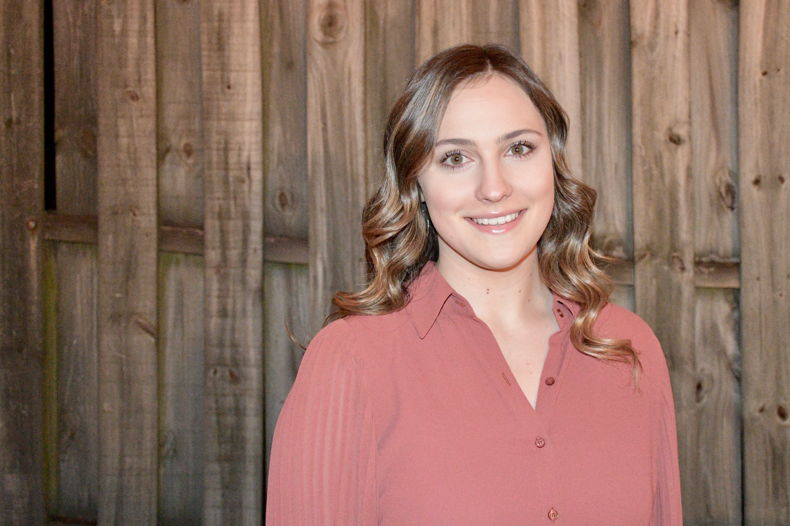
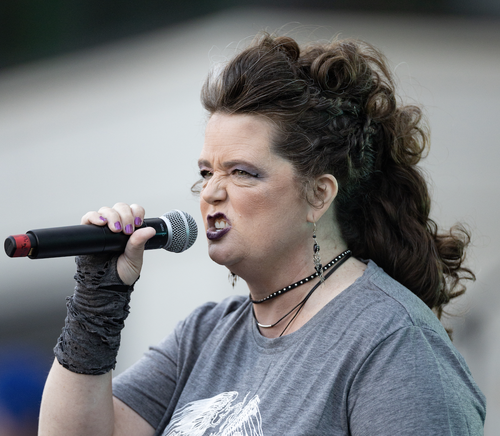
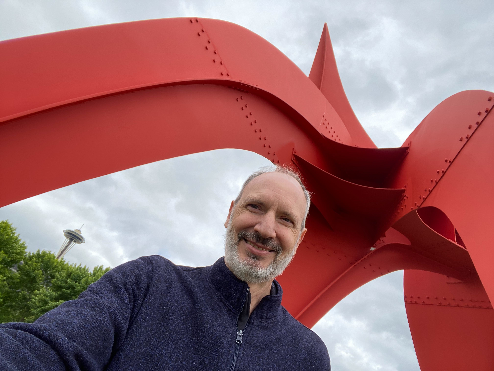
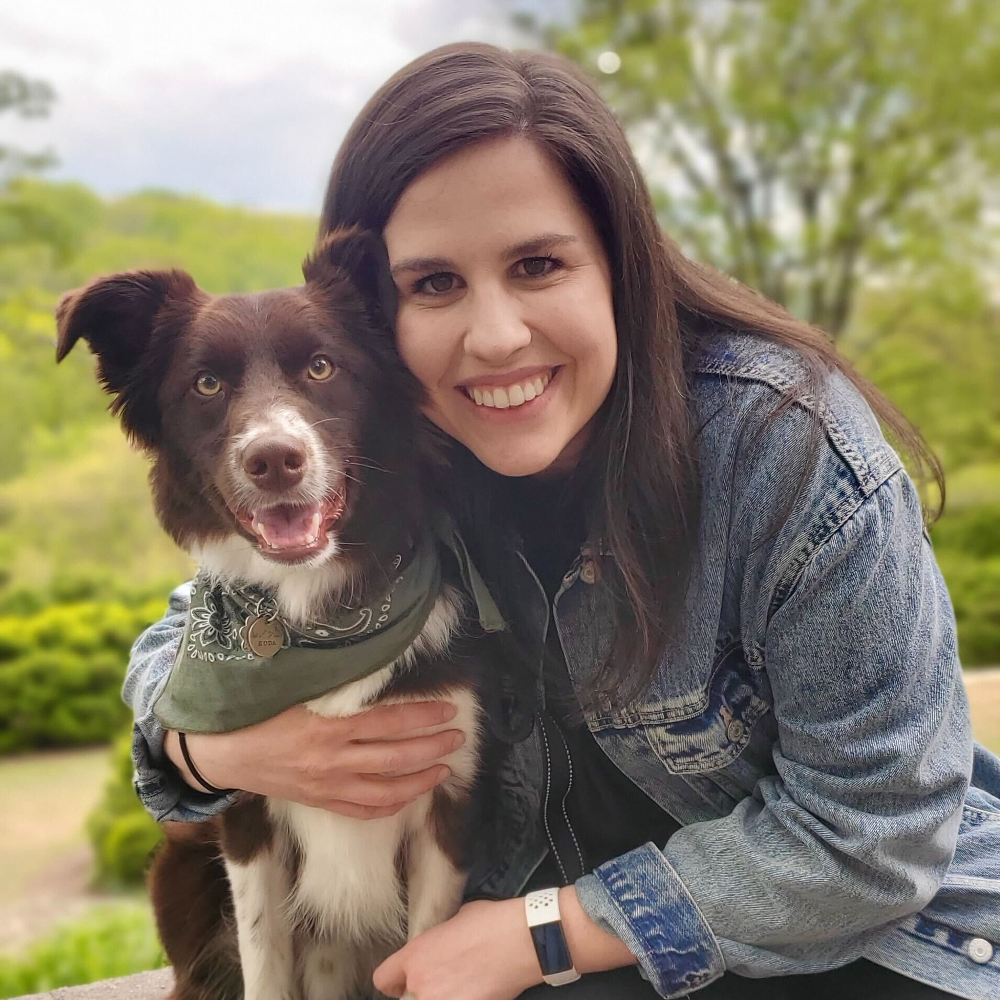

Meet the Developers

Amanda Tutalo
Nashville Tennessee
Here's a small text description for the card content. Nothing more, nothing less.

Hope Ross
Franklin Tennessee
Fun Hobby: I like to sing, which is ironic as an introvert with some serious stage fright. Mostly classical choir
or church choir, but this year I learned how to use a mic to rock out during our Battle of the Bands.
Fun Fact: I once designed and built my own tiny home, 144sq/ft of studio cabin.
Interesting places you've visited or lived: I've lived in 12 states and 2 countries, including Turkey.

Keith Isbell
Seattle Washington
Fun Fact: My parents were missionaries in Latin America 25 years and I went back as a missionary for another 25
years.
Fun Hobby: I love traveling and living in “exotic” places.
Goal for 2023: Find a remote job that allows for travel and ministry.
Odd place you've visited or lived: lived in a town for more than 20 years called Shell, after the oil company that
founded it, on the edge of Ecuador’s eastern Amazon jungle.
Random factoid: I’ve tried different foods such as grubs, fried ants, monkey, crocodile and guinea pig.

Kendall McHenry
Franklin Tennessee
Fun Fact: I change my own oil!
Fun Hobby: Literally anything with my dog. Koda is my 3-year-old Border Collie mix rescue pup. He is an absolute
gift from God and bring so much joy to my life. I’m low-key obsessed with him. We spend a lot of time outdoors,
adventuring, training, and making people smile. He’s never met a stranger!
Odd place you’ve visited or lived: Rang in New Years 2017 with a random group of Norwegians at their home in the
fjords of Bergen, Norway.
Micah Innerarity
Williamsport Pennsylvania
Fun Hobby: I design and professionally run dungeons and dragons games on the side!
Goal for 2023: Expand Foundation Gaming to publish physical and digital content. Then its time to start the real
work and begin my development career this gives me and my wife the ability to really push towards our large
long-term goals. I'd like to start development or at least save a decent sum for my wife's and I's plans to
build on our 10 acres, including a small home, and campsites (hipcamp business!), and possibly an Airbnb.
Odd place you've visited or lived: I lived in the loft of a barn for over a year. Pa winters are quite cold. So
the answer to "were you raised in a barn..." is yes, yes I was.